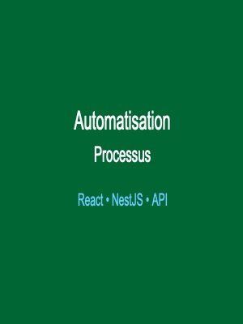

Tableau de bord opérationnel – Bouygues Telecom
Conception et maintenance de tableaux de bord interactifs sous Tableau pour le suivi des indicateurs de performance.
Réduction de la charge de travail de 30 min/jour pour les équipes de production.
Tableau
Oracle
SQL
Data Analyse

Automatisation des processus – Bouygues Telecom
Développement d'une application web (NestJS/React) pour automatiser les processus métier et réduire les tâches manuelles.
React
NestJS
TypeScript
Automatisation

Base de données Pokémon
Création et gestion complète d'une base de données pour un jeu Pokémon avec requêtes complexes et optimisation.
SQL
Python
Base de données

Simulateur de trafic aéroport
Application de simulation de gestion du trafic d'un aéroport avec algorithmes d'optimisation et interface graphique.
Java
C
Algorithmique